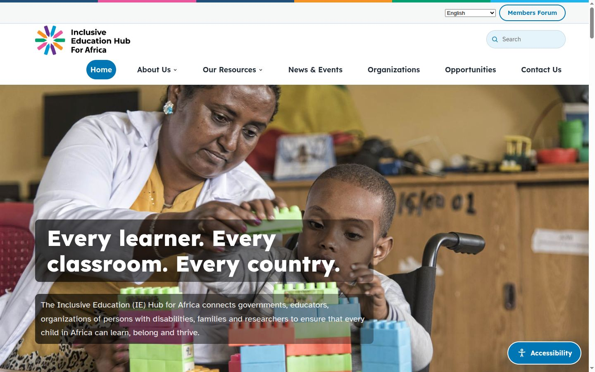
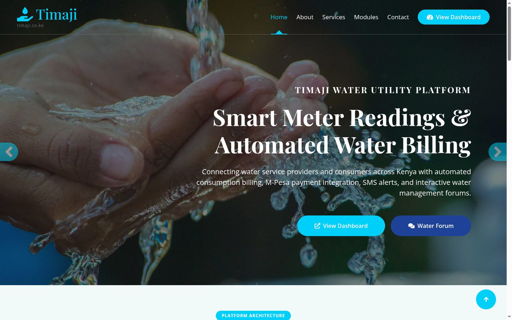
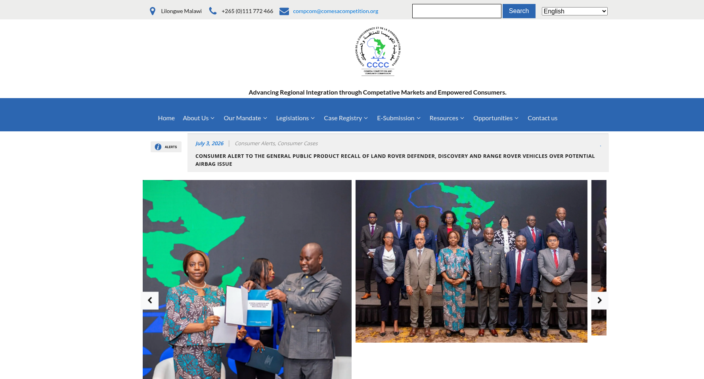
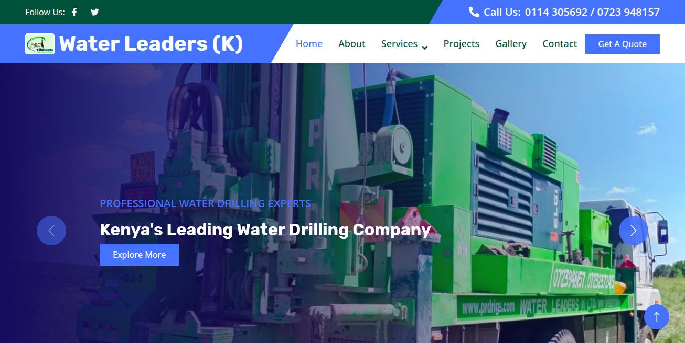

Platforms & web apps
Custom PHP/MySQL, Django and FastAPI backends, and WordPress with Oxygen Builder and ACF — CMSs, member areas, forums and dashboards.
e.g. IE Hub for Africa, COMESAFull Stack Developer & DevOps Engineer WordPress / Oxygen Builder Specialist Founder of Devlynx Python & Django Developer Linux & Infrastructure Engineer
I build platforms from scratch — and keep them running under pressure.
(01) — About
Full Stack Developer and DevOps Engineer at ADRES Group, and an independent web developer. I pair WordPress and Oxygen Builder craft with real infrastructure skills — the person who can build a platform from scratch and keep it running when it matters.
(02) — What I do
Most projects need more than a website. I take platforms from the first client meeting to a stable production server — and keep looking after them once they're live.
Custom PHP/MySQL, Django and FastAPI backends, and WordPress with Oxygen Builder and ACF — CMSs, member areas, forums and dashboards.
e.g. IE Hub for Africa, COMESAM-Pesa Daraja C2B with automatic bill reconciliation, SMS alerts, email and CRM flows (Fluent Forms, FluentCRM), and REST APIs for mobile clients.
e.g. Timaji WaterLinux and cPanel/Plesk servers, domain and server migrations, DNS, security incident remediation, caching and performance tuning.
e.g. LVBC, IGAD FSI migrationReact Native (Expo) apps for staff in the field — camera and on-device OCR, QR lookup, GPS capture — talking to the same backend as the dashboard.
e.g. Timaji meter reader, SMWCSPlatforms built, migrated or maintained for
(03) — How I work
I run the discovery meetings myself — goals, users, content, and what already exists that we can keep.
On a staging copy first, with the stack chosen to suit the client and the team who will run it.
Planned staging-to-production cutovers: data migration, database search-replace, and DNS and email preserved.
Security fixes, outages, caching and performance work after go-live — the part most projects skip.
(04) — Selected work
Drag the page — it scrolls sideways →

Continental platform for LM International — a public site in six languages, a custom CMS, and a members forum with threads, mentions, direct messages and moderation.

Automated water billing: meter readings become bills, M-Pesa Paybill payments reconcile against them automatically, and field apps handle OCR meter reading and customer sign-up.

Led migration from Divi to Oxygen Builder with legacy case data migrated into WordPress/ACF.

Website for a water solutions and drilling company serving clients across Kenya.
“Exceptional work! Delivered the project ahead of schedule with outstanding quality.”
“Highly recommend! Great communication and attention to detail throughout the project.”
“Your portfolio is a true testament to your hard work and dedication. Each project reflects a deep understanding of the subject matter.”
Next step